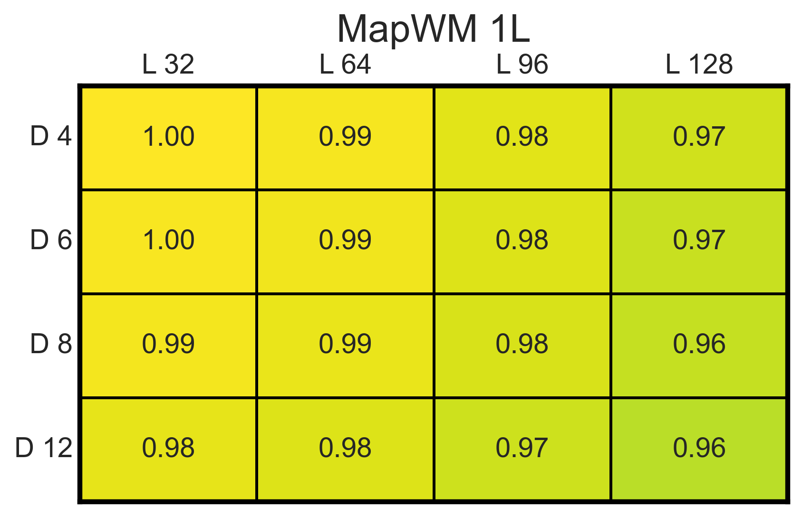

This page provides the additional benchmarks and visualizations requested during the review process for our MapFormer paper.

Description: Single layer, single head MapWM shows near perfect length and depth generalization. 1 layer, 1 head of size 128 MapFormer, trained on Dyck-2 sequences of length 32 nad maximum nested depth of 12.